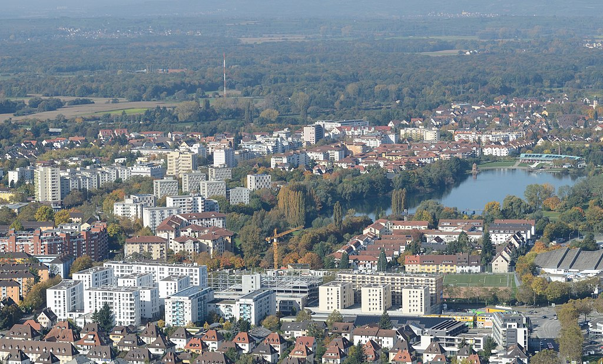
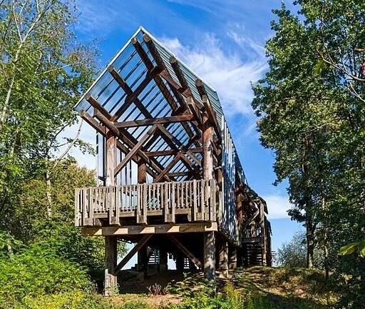
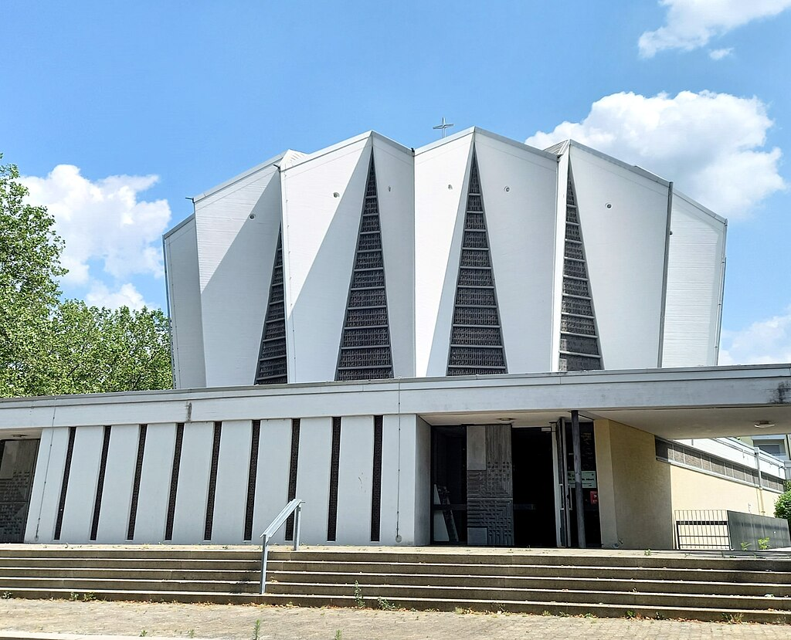

Zurück
Hauptseite
Über
Anfahrt
Übernachtungen
Betzenhausen von oben

Der Stadtsee

Sehenswürdigkeiten


![Satellitenbild von Betzenhausen. [Quelle: Maps Data: Google,©2024 CNES / Astrium, Maxar Technologies. Lizenz: https://about.google/brand-resource-center/products-and-services/geo-guidelines/#required-attribution]](../images/Betzenhausen_maps_small.png)
![Ansicht von oben. [Wolkenkratzer, CC BY-SA 3.0, Bild verkleinert. Quelle: https://commons.wikimedia.org/w/index.php?curid=28963188. Lizenz: https://creativecommons.org/licenses/by-sa/3.0/deed.en]](../images/Flückigersee.jpg)
![Der See im Sommer. [ni, Adobe Standardlizenz, keine Veränderungen. Quelle: https://stock.adobe.com/de/images/park-with-a-lake-in-freiburg-seepark-betzenhausen/323696180?prev_url=detail. Lizenz: https://stock.adobe.com/de/license-terms#standardLicenses]](../images/Stadtsee2.jpg)
![Kirche St. Thomas, nach Renovation 2015. [Daniel Veyhelmann, CC BY-SA 4.0, keine Veränderungen. Quelle: https://commons.wikimedia.org/wiki/File:St._Thomas_Kirche.png. Lizenz: https://creativecommons.org/licenses/by-sa/4.0/deed.en]](../images/Kirche.png)
![Gaskugel Freiburg-Betzenhausen, Ansicht von Südwest. [Andreas Schwarzkopf, CC BY-SA 4.0, keine Veränderungen. Quelle: https://commons.wikimedia.org/w/index.php?curid=80126438. Lizenz: https://creativecommons.org/licenses/by-sa/4.0/deed.de]](../images/Gaskugel.png)
{kind=link}
{kind=link}
{kind=link}